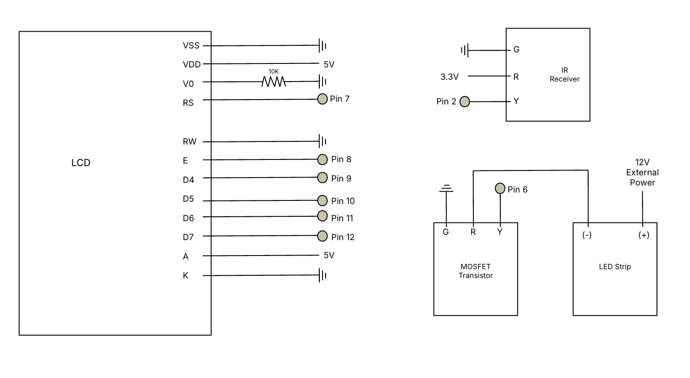
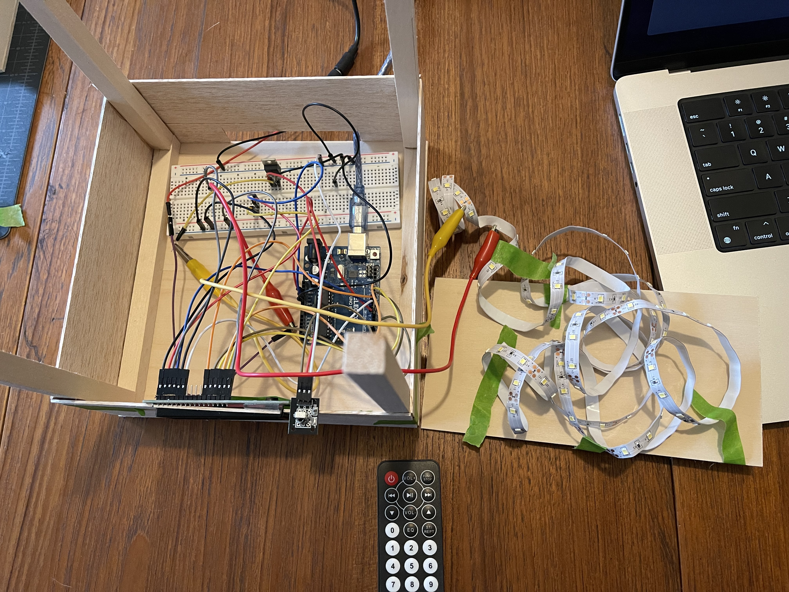
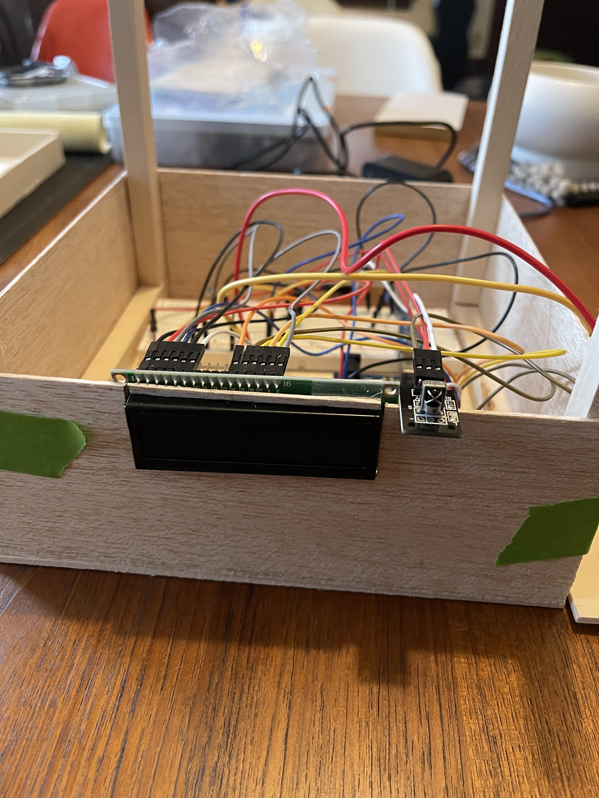

The Study Buddy Lamp is a smart LED-based lamp designed to help students manage their study time effectively and prevent burnout.
The Study Buddy Lamp uses the following Materials:
The schematic below shows how the components are connected.
  The following is the full Arduino code:
#include
#include
// Define the pins (RS, E, D4, D5, D6, D7)
LiquidCrystal lcd(7, 8, 9, 10, 11, 12);
#define LED_PIN 6 // LED strip
#define IR_RECEIVER_PIN 2 // IR receiver
// Define IR Remote Button Codes
#define POWER_BUTTON 0xBA45FF00 // Power button
#define BUTTON_0 0xE916FF00 // Button 0
#define BUTTON_1 0xF30CFF00 // Button 1
#define BUTTON_2 0xE718FF00 // Button 2
#define BUTTON_3 0xA15EFF00 // Button 3
#define BUTTON_4 0xF708FF00 // Button 4
#define BUTTON_5 0xE31CFF00 // Button 5
#define BUTTON_6 0xA55AFF00 // Button 6
#define BUTTON_7 0xBD42FF00 // Button 7
#define BUTTON_8 0xAD52FF00 // Button 8
#define BUTTON_9 0xB54AFF00 // Button 9
#define BUTTON_ENTER 0xE619FF00 // Enter to confirm time entry
#define BUTTON_CLEAR 0xF20DFF00 // Clear input
bool lampOn = false;
bool studySessionActive = false;
String inputTime = ""; // Store entered time as a string
int studyTimeMinutes = 0; // Stores planned study time
unsigned long sessionStartTime; // Stores when the session started
unsigned long elapsedMinutes = 0; // Track actual time studied
void setup() {
Serial.begin(9600);
IrReceiver.begin(IR_RECEIVER_PIN);
pinMode(LED_PIN, OUTPUT);
digitalWrite(LED_PIN, LOW); // Start with LED OFF
// Initialize LCD
lcd.begin(16, 2);
lcd.print("Study Buddy Lamp");
delay(2000);
lcd.clear();
}
void loop() {
if (IrReceiver.decode()) {
long command = IrReceiver.decodedIRData.decodedRawData;
Serial.println(command, HEX); // Print received IR command
switch (command) {
case POWER_BUTTON:
if (studySessionActive) {
cancelStudySession(); // Cancels session and turns lamp off
} else {
lampOn = !lampOn;
if (lampOn) {
digitalWrite(LED_PIN, HIGH);
Serial.println("Lamp ON");
lcd.clear();
lcd.setCursor(0, 0);
lcd.print("Lamp: ON");
} else {
digitalWrite(LED_PIN, LOW);
Serial.println("Lamp OFF");
inputTime = ""; // Reset time entry
lcd.clear();
lcd.setCursor(0, 0);
lcd.print("Lamp: OFF");
}
}
break;
case BUTTON_0: case BUTTON_1: case BUTTON_2: case BUTTON_3:
case BUTTON_4: case BUTTON_5: case BUTTON_6: case BUTTON_7:
case BUTTON_8: case BUTTON_9:
if (lampOn && !studySessionActive) { // Only allow input if session isn't running
inputTime += String(commandToDigit(command));
Serial.print("Time entered: ");
Serial.println(inputTime);
lcd.clear();
lcd.setCursor(0, 0);
lcd.print("Enter time:");
lcd.setCursor(0, 1);
lcd.print(inputTime + " min");
}
break;
case BUTTON_CLEAR: // Clear entered time
if (lampOn && !studySessionActive) {
inputTime = "";
Serial.println("Cleared time entry.");
lcd.clear();
lcd.setCursor(0, 0);
lcd.print("Time cleared");
}
break;
case BUTTON_ENTER: // Confirm entered time
if (lampOn && !studySessionActive && inputTime.length() > 0) {
studyTimeMinutes = inputTime.toInt(); // Store entered minutes
sessionStartTime = millis(); // Record the actual start time
elapsedMinutes = 0; // Reset elapsed time
Serial.print("Study Time Set: ");
Serial.print(studyTimeMinutes);
Serial.println(" minutes");
lcd.clear();
lcd.setCursor(0, 0);
lcd.print("Studying for:");
lcd.setCursor(0, 1);
lcd.print(studyTimeMinutes);
lcd.print(" min");
inputTime = ""; // Reset input
studySessionActive = true; // Mark study session as active
startStudySession(studyTimeMinutes);
}
break;
}
IrReceiver.resume(); // Receive next IR signal
}
}
// Function to map IR command to a digit
int commandToDigit(long command) {
switch (command) {
case BUTTON_0: return 0;
case BUTTON_1: return 1;
case BUTTON_2: return 2;
case BUTTON_3: return 3;
case BUTTON_4: return 4;
case BUTTON_5: return 5;
case BUTTON_6: return 6;
case BUTTON_7: return 7;
case BUTTON_8: return 8;
case BUTTON_9: return 9;
default: return -1;
}
}
// Function to handle the study session
void startStudySession(int totalMinutes) {
Serial.println("Study session started...");
lcd.clear();
lcd.setCursor(0, 0);
lcd.print("Studying...");
for (int i = 0; i < totalMinutes; i++) {
unsigned long minuteStart = millis();
// Check if a break is needed
if (i > 0 && i % 30 == 0) {
Serial.println("Taking a 3-minute break...");
lcd.clear();
lcd.setCursor(0, 0);
lcd.print("Break Time!");
digitalWrite(LED_PIN, LOW);
delay(180000); // 3-minute break
digitalWrite(LED_PIN, HIGH);
lcd.clear();
lcd.print("Resume Studying");
delay(2000);
}
// Check for cancellation every second
while (millis() - minuteStart < 60000) {
if (IrReceiver.decode()) {
long command = IrReceiver.decodedIRData.decodedRawData;
Serial.println(command, HEX);
if (command == POWER_BUTTON || command == BUTTON_CLEAR) {
cancelStudySession();
return;
}
IrReceiver.resume();
}
delay(1000); // Check every second
}
elapsedMinutes++; // Increment actual study minutes
}
endStudySession();
}
// End the session and display minutes studied
void endStudySession() {
Serial.print("You have studied for ");
Serial.print(elapsedMinutes);
Serial.println(" minutes!");
lcd.clear();
lcd.setCursor(0, 0);
lcd.print("You studied for:");
lcd.setCursor(0, 1);
lcd.print(elapsedMinutes);
lcd.print(" min!");
delay(5000);
digitalWrite(LED_PIN, LOW);
lcd.clear();
lcd.print("Session Complete");
studySessionActive = false;
}
// Cancel the session
void cancelStudySession() {
Serial.println("Study session canceled.");
endStudySession();
}
millis() logic to correctly detect time intervals.